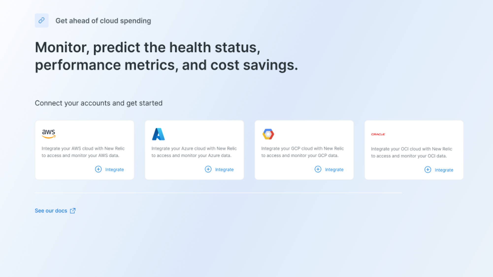
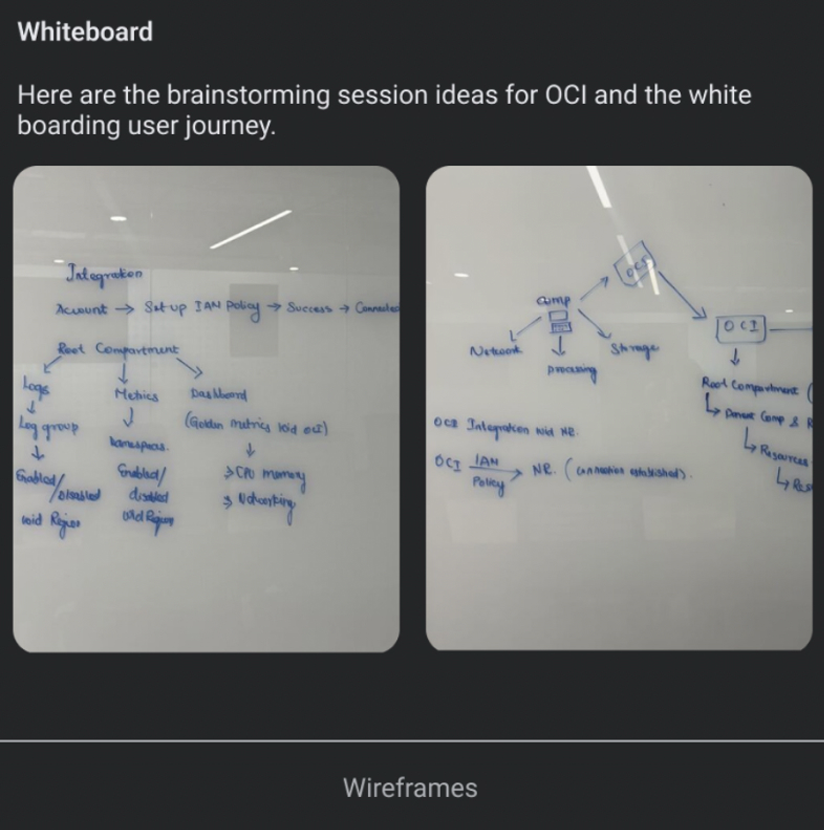
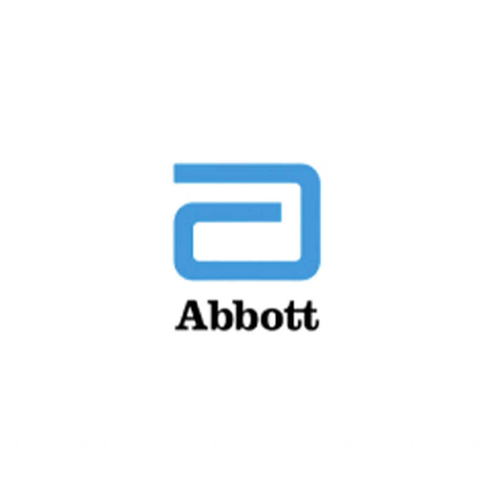

Product Design · New Relic · 2024
A unified cloud observability platform provides full visibility into the health and performance of each layer of your environment.

The Design Challenge
The engineer has successfully deployed their application to a cloud platform. The app is running, users are accessing it — but they're flying blind. They don't have proper monitoring in place.
Designer after being assigned to a new project should fully grasp the product and explain the problem and solution all within a day or week.
Users report the application is unavailable, but the engineer had no signal that anything was wrong.
Users say the app is slow, but there is no clear trail to show when the slowdown started or what caused it.
Monthly costs increase, no visibility into which services are driving the spike.
New code goes out, something breaks, and the engineer cannot quickly connect the change to the issue.
Solution
The engineer starts researching monitoring solutions and discovers New Relic — a unified platform providing full visibility into application health, performance, and costs across any cloud environment.
First Draft — Sketches
I've started by drawing some sketches to have an idea on how the main user flow could work. Hand-drawn sketches are great to move forward very fast and try completely different layout and content structures.

Sketches are useful to start organizing ideas and shape an overview of how everything will work. I usually find it better to write down how things could work than directly jumping to move pixels on any design tool.
Mockups
Next step is creating mockups. In this phase is where your design starts to feel like a real product. I've decided to place the widgets in the top. AI insights allow users to get to a detail view and check their risk and criticality of the product.
View Figma PrototypeOur Customers
